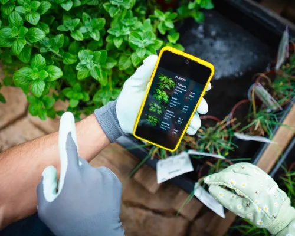

Urban Gardening and Technology

|
Urban gardening has evolved from a simple hobby into a technology-supported lifestyle practice. Modern tools such as mobile applications, automated watering systems, and smart sensors are enabling city residents to grow plants efficiently in limited spaces like balconies and kitchens. These technologies improve accessibility by reducing manual effort and making plant care more predictable. They also support sustainable living by reducing food waste and encouraging home-based food production. As a result, urban gardening now combines convenience, sustainability, and creativity in everyday urban life. |
Smart Gardening Systems
|
Smart gardening systems use sensors to monitor soil moisture, temperature, and sunlight levels in real time. The collected data is sent to mobile devices or control systems that assist users in managing plant care. These systems reduce uncertainty in watering schedules and help prevent common issues such as overwatering or underwatering. They are especially useful for beginners who lack prior gardening experience. Overall, they improve plant survival rates and make small-space gardening more efficient. |

|
Mobile Applications in Gardening
|
 |
Gardening applications provide digital support for plant care through reminders, identification tools, and guidance systems. Key functions include:
These features make gardening more accessible to beginners and improve consistency in plant maintenance through timely alerts and guidance. |
Sustainable Urban Gardening
|
Technology also supports sustainability in urban gardening by optimizing resource usage. Examples include:
These innovations reduce environmental impact while improving productivity in small urban spaces. |

|
Future of Urban Gardening

|
The future of urban gardening is expected to be highly automated through artificial intelligence and IoT-based systems. These systems will be capable of predicting plant growth patterns and adjusting environmental conditions automatically. This will reduce manual effort further and increase food production efficiency in densely populated urban areas. |
Conclusion
Urban gardening supported by modern technology is transforming how people interact with nature in cities. It enables efficient food production, promotes sustainability, and improves accessibility for beginners. This combination of technology and gardening provides a practical solution for modern urban lifestyles.